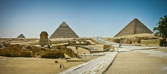
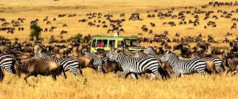
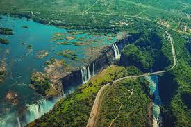
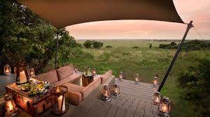

Giza Necropolis,Egypt
If you have always wanted to see the pyramids in Egypt, then make Giza your next travel destination. Giza is the gateway to Egypt’s most iconic structures, and it is very close to the city of Cairo. While in Giza, you can step inside the Great Pyramid of Khufu, now the last remaining structure of the Seven Ancient Wonders of the World. You can also tour the Sphinx, several smaller pyramids and a number of incredible museums helping to explain the role of these pyramids and their significance in Egyptian history.
Serengeti National Park,Tanzania
In Northeast Tanzania is the Serengeti National Park, one of Africa’s most incredible conservation areas. The name Serengeti means endless plains, and that is exactly what you’ll find within the park. More than a million wildebeest, and over 200,000 zebras, migrate through the plains each year. When you visit the Serengeti National Park, you will be able to see wildlife like cheetahs, leopards, giraffes, buffalo, gazelles and so much more. Hot air balloon trips as well as photo safaris are both incredible ways to make the most of the Serengeti.
Victoria Falls,Zambia & Zimbabwe
Right on the border between Zambia and Zimbabwe is Victoria Falls, an incredible waterfall on the Zambezi River. In Zimbabwe, the falls as well as the surrounding town is known as Victoria Falls. Across the border in Zambia, the falls are called Mosi-oa-Tunya. From December to March, the falls are more dramatic because it is also the rainy season, but the rest of the year can offer a less obscured view. In addition to admiring the views, you can enjoy Victoria Falls by canoeing or rafting near its base or having a romantic sunset cruise beneath the falls
Masai Mara National Reserve,Kenya
Africa is inhabited by many different people groups, but few as are fascinating as the Masai. This group owns the Masai Mara National Reserve toward the southern part of Kenya, and every year thousands of tourists come to explore the scenery and the wildlife. In addition to seeing everything from rhinos to lions, you can visit a local village to learn more about the Masai Mara culture, cuisine, customs and dress.
Cape Town,South Africa

The capital city of South Africa is Cape Town, an extraordinary, historic and vibrant city named for its location on the Cape of Good Hope. To get to know the history of Cape Town, be sure to explore incredible landmarks like the colorful homes in the Bo-Kaap neighborhood as well as Robben Island, where political prisoners like Nelson Mandela were once held. One of the top natural attractions is Table Mountain, which offers breathtaking views over the Cape of Good Hope as well as the sprawling city. You can hike up Table Mountain or take a ride on the cable cars.